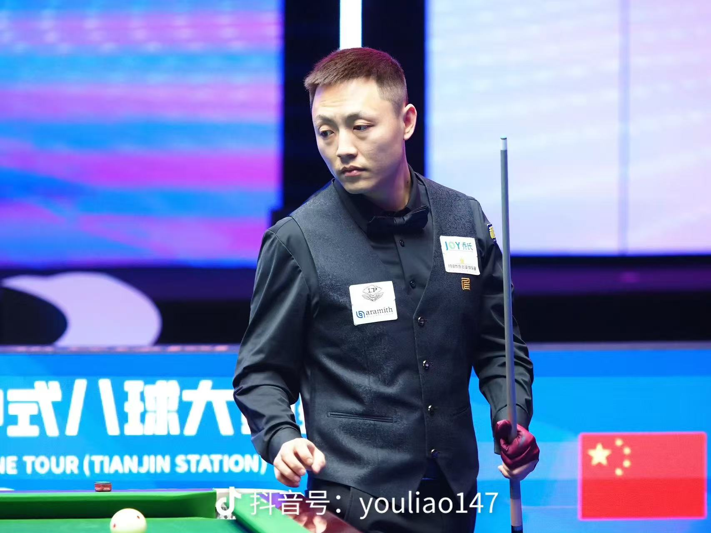

姓名：郝铭志
性别：男
专业：数据科学与大数据技术
学校：大连海洋大学
联系电话：13514553685
个人简介：本人注重理论与实践相结合，具备良好的学习能力和自我提升意识。 在专业学习之外，积极参与竞技体育与实践活动， 通过长期训练与比赛，不断提升自身专注力、执行力与抗压能力。
在长期的中式台球训练与赛事参与过程中，系统接受了高强度竞技训练， 熟悉比赛节奏控制、攻防策略选择以及复杂局面下的决策处理。 多次参与规模较大的公开赛与邀请赛， 在比赛中能够保持良好的专注状态， 并在关键回合中合理分配风险与收益。
通过与高水平选手的多次交手， 不断修正自身技术细节，逐步形成稳定的个人竞技风格。 该阶段经历对个人心理素质、抗压能力和持续专注能力提升起到了重要作用。
结合数据科学与大数据技术专业背景， 尝试将数据分析方法引入竞技复盘过程中。 通过对比赛击球成功率、失误类型、走位选择等数据进行整理和分析， 对个人竞技表现进行量化评估。
在实践中逐步掌握了将主观经验转化为客观数据指标的分析方法， 并据此制定更有针对性的训练计划， 有效提升了训练效率和竞技稳定性。
在多项中式台球赛事中取得较为突出的竞技成绩， 曾在大型公开赛中战胜多名经验丰富的职业选手， 以稳定发挥成功晋级淘汰赛阶段。 相关比赛表现获得业内人士与观众的积极评价。
通过持续训练与比赛积累， 在技术执行力、线路判断与比赛节奏控制方面取得明显进步， 多次在关键比赛中发挥稳定，展现出良好的竞技状态。
在学习与实践过程中，注重将竞技经验转化为个人成长动力。 通过总结比赛得失，持续优化训练方法， 逐步形成系统化的能力提升路径， 为今后的专业学习与实践发展奠定了坚实基础。